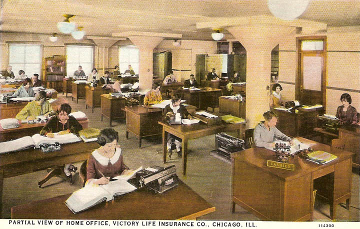
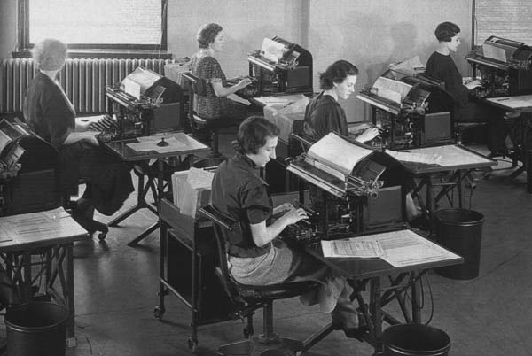

Bookkeeping Office of Department of National Benefits Association, Washington, D.C. 1917
Photo courtesy of the Early Office Museum
Victory Life Insurance Co General Office, Chicago, IL_OM. 1924
Photo courtesy of the Early Office Museum
An accounting department in Brooklyn, NY. 1925.
Illustration courtesy of the Early Office Museum
Ad for Acme Visible Record System. 1920s.
Photo courtesy the Early Office Museum
Accounting office circa 1920.
Photo courtesy Early Office Museum
Equitable Insurance Co Bookkeeping Department. 1934.Ads for accounting machines assumed women in the office would be doing the accounting. 1950 (l) and 1959 (r)